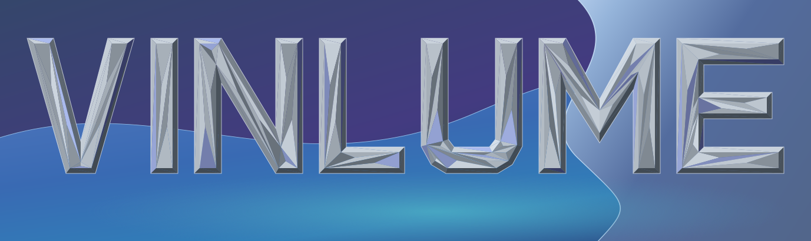
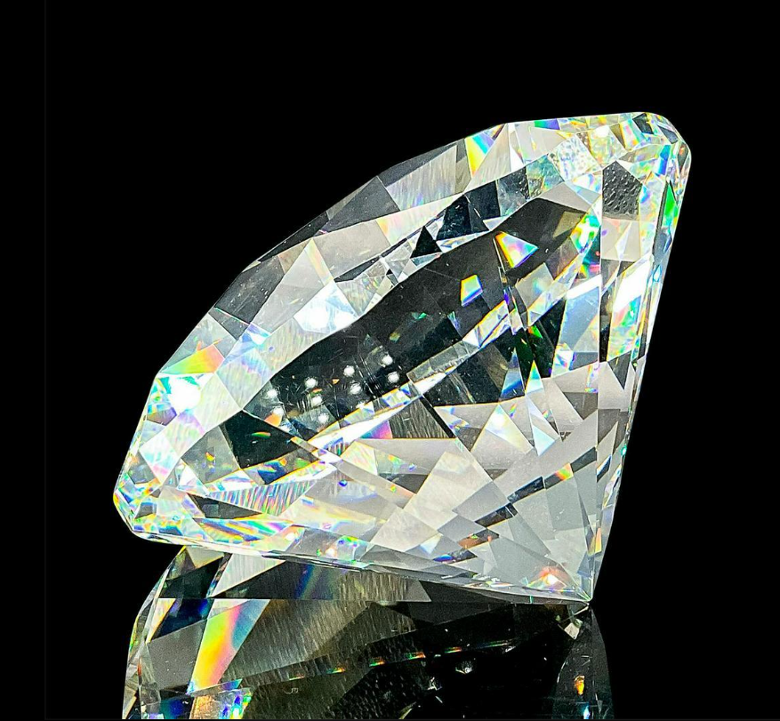

VINLUME / MATERIAL RESEARCH — 03
Diamond.La forma de la luz.
Un sólido transparente. La luz entra, se divide y rebota en su interior. Dirígela con el cursor.
Cristal tallado / sólido óptico
Preparando el estudio…
01 / VOLUMENCorona, cintura y pabellón. Geometría cerrada, facetas reales.
02 / ÓPTICATres trayectorias RGB y reflexión interna. Sin relleno metálico.
03 / ESTUDIOEntorno HDR fotográfico y fondo visible a través del cristal.
Diagnóstico y coste real de esta sesión
La consulta GPU, cuando está disponible, mide el tiempo de dibujo del renderer. CPU mide el envío. No son mediciones de energía ni temperatura. El render se detiene al estabilizarse la luz y cuando el escenario no está visible.
UN MATERIAL / TRES EXPRESIONES DE MARCA
Estudios de identidad visual. El disco es un objeto abstracto de marca; no representa un producto disponible ni un nuevo modelo de Mini CD.
REFERENCIAS LOCALES / DIAMOND GLASS

Observa el fondo a través de las caras, las reflexiones del estudio y los destellos de color en los cambios de dirección. El modo Testigo hace explícita la distorsión del fondo.
Comparar con WebGL 2,5D y SVG →